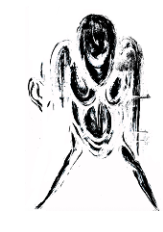

Nahal Daftari
A*WAY
Oil paint, acrylics, plaster, fabric
This installation seeks to recreate the process of reflection, grounded in human experiences of perceiving reality and its various virtual forms. It considers how our understanding of “being” is shaped by our situational awareness of the surrounding environment. Using a combination of painting and sculpture that expands into an isolated space, the work magnifies the collision of thoughts and emotions that occur during a reformation of identity. This piece attempts to capture different aspects of this process—questioning whether reflection is a representation of what is perceived or what actually exists.
instagram:@naldfti
♡ ♡ back ♡ ♡